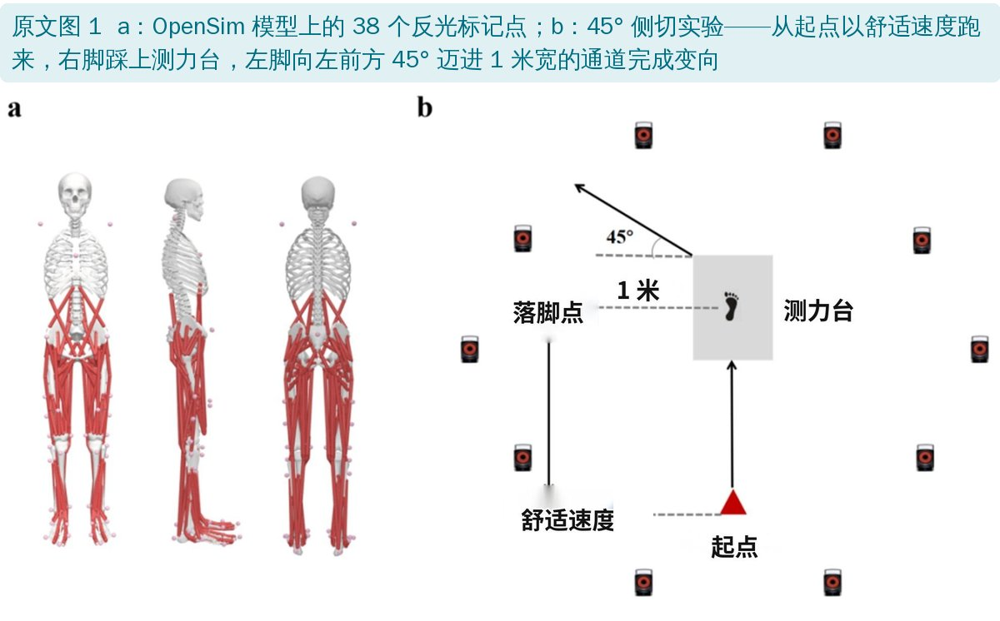
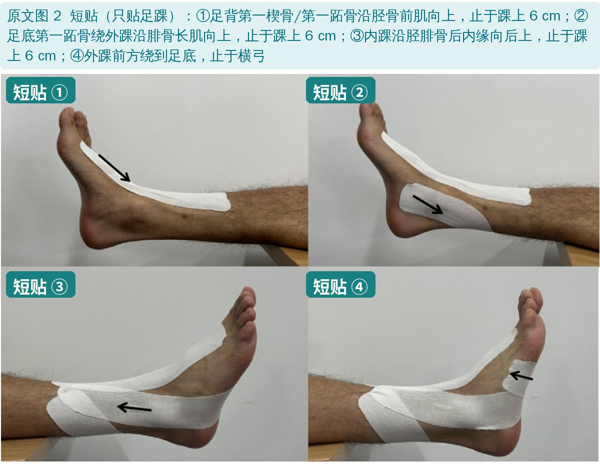
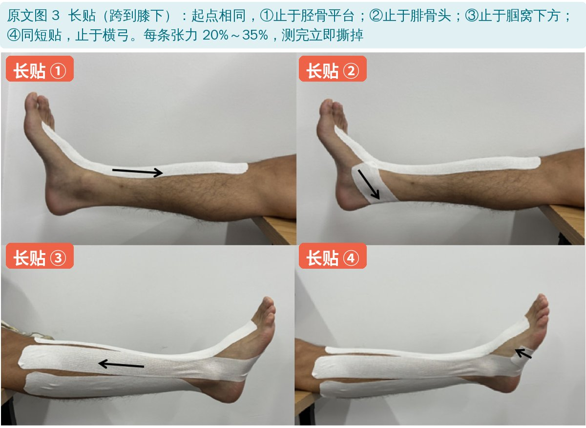
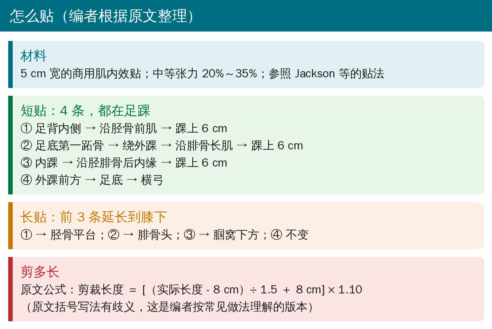
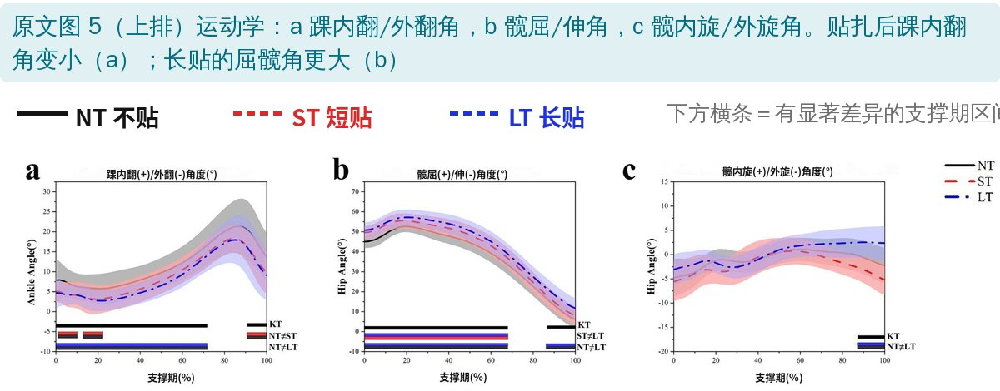
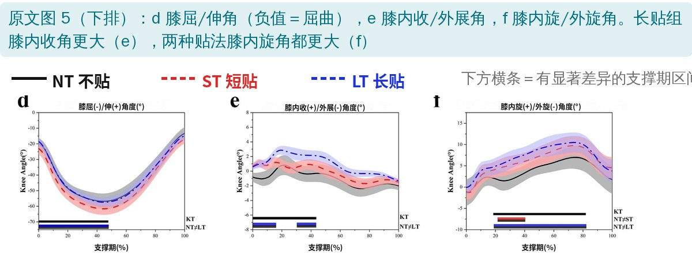
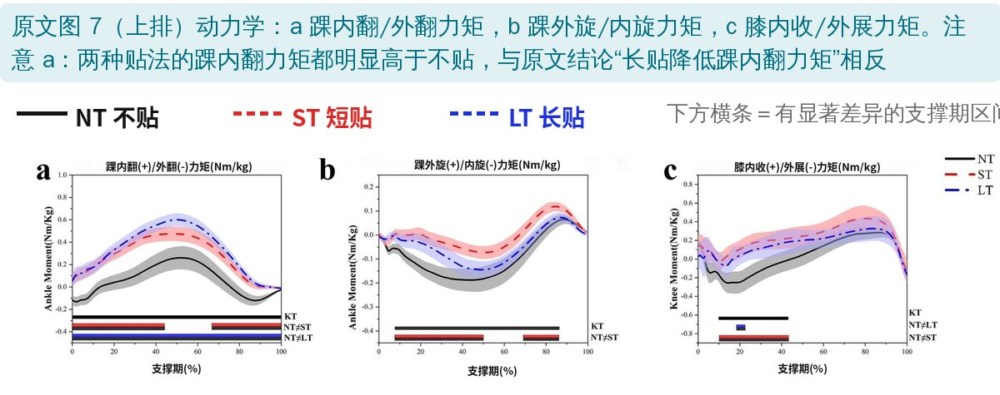
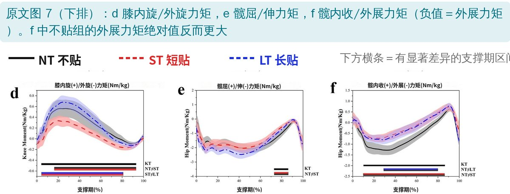
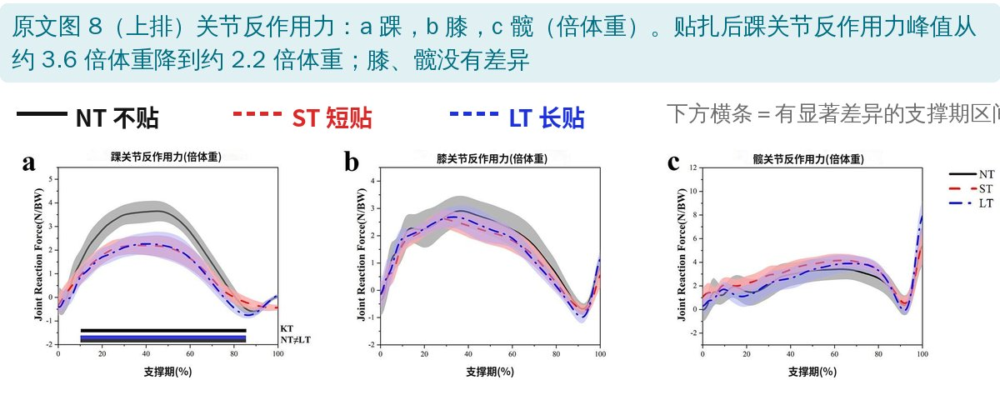

🔖原文信息（编者中文重排）
📚 文献信息
▪ Wang X, Quan W, Ma Y, Jozsef S, Fang Y, Gu Y. The Biomechanical Effects of Kinesiology Taping Methods on Side-Step Cutting Movements in Chronic Ankle Instability. Healthcare. 2024;12(24):2561. doi:10.3390/healthcare12242561
▪ 作者单位：宁波大学体育学院、匈牙利塞格德大学工学院、宁波市第二医院放射科
▪ 文章类型：实验室生物力学研究（12 人，同一批人分别在不贴、短贴、长贴三种条件下测试）
• 踝外侧扭伤复发率高，约 40% 会发展成慢性踝不稳（反复扭伤、总觉得脚踝“发软”）
• 侧切（急停变向）对膝、踝的多平面负荷很大；慢性踝不稳者侧切时踝跖屈、内翻更大，髋膝屈曲也和健康人不同
• 肌内效贴可拉伸到原长的约 140%，对皮肤产生持续牵拉；有研究认为它能改善踝本体感觉和平衡
• 一个没人系统研究过的问题：贴多长才好？只贴足踝，还是延伸到膝下（跨关节）？理论上贴得越长，覆盖皮肤越多、感觉输入越多

🔖原文图 1：标记点和侧切实验
• 受试者：12 名慢性踝不稳者，平均 23.9 岁、身高 181 cm、体重 80 kg；坎伯兰踝不稳量表（CAIT）平均 16.7 分（≤24 分为不稳）
• 三种条件（随机顺序）：不贴（NT）、短贴（ST）、长贴（LT），每种做 4 次成功的 45° 侧切
• 设备：10 台 Vicon 红外摄像头（200 Hz）＋ Kistler 测力台（1000 Hz），赤脚，舒适速度跑来
• 分析：Visual 3D 算关节角度、角速度、力矩；OpenSim 算关节反作用力（地面反作用力和肌肉力的合力）；用统计参数映射（SnPM）比较整个支撑期的曲线

🔖原文图 2：短贴的 4 条

🔖原文图 3：长贴的 4 条

🔖贴扎步骤（编者根据原文整理）
注意：本研究贴完立即测试、测完就撕，只看贴上当下的即刻作用，不能说明贴几天的效果。
• 长贴：屈髋、屈膝角度和屈髋角速度更大；踝关节反作用力降低（支撑期 10%～85%）
• 短贴：踝内翻角减小，膝内旋角增大
• 两种贴法：髋外展力矩、膝内收/外展力矩增大
• 作者结论：长贴的改善更明显，可能有助于慢性踝不稳者预防下肢损伤

🔖原文图 5（上排）

🔖原文图 5（下排）

🔖原文图 7（上排）

🔖原文图 7（下排）

🔖原文图 8（上排）
曲线为均数，阴影为标准差；正负号含义见每张小图的标题（如“膝屈(-)/伸(+)”表示数值越负、屈膝越多）。
• 踝内翻角：两种贴法都比不贴小几度，这一点和文字一致
• 膝屈曲：图 5d 中屈膝最多（曲线最低）的是短贴，长贴和不贴几乎重合——与“长贴屈膝更大”的说法相反
• 踝内翻力矩：图 7a 中两种贴法都明显高于不贴，长贴最高——而结论写的是“长贴显著降低踝内翻力矩”
• 髋外展力矩：图 7f 中负值代表外展力矩，不贴组更负（外展力矩更大），贴扎后反而变小——与“贴扎增大髋外展力矩”不符
• 踝关节反作用力：贴扎后峰值从约 3.6 降到约 2.2 倍体重（降幅约 40%），而且短贴和长贴曲线几乎一样；文字却只说长贴降低
• 文字结论和图对不上：上面几处关键结论与原文自己的曲线方向相反，正负号定义可能出了问题，读者无法判断哪个是对的
• 踝关节反作用力降 40% 不太可能：一条贴布不太可能让踝关节受力减少近一半；跑速只要求“舒适”，没有监测，三种条件之间速度不同就能造成这样的差异
• 统计方法：同一批人做三种条件，却按“三个独立组”做单因素方差分析
• 样本小、没有对照：只有 12 人、性别未报告；没有假贴（安慰剂）组，受试者和测试者都知道贴了什么
• 任务简化：预先知道方向的侧切，真实比赛多为临时变向；只测即刻效果
• 优点：同时看了髋、膝、踝三个关节和关节反作用力，贴法和剪裁长度写得具体，可以复制
• 结论与图相反：长贴“降低踝内翻力矩”“屈膝更大”“增大髋外展力矩”三处与图 5d、图 7a、图 7f 的曲线方向不符（见上）
• 纳入标准矛盾：引言按国际标准定义慢性踝不稳为“至少两次明显扭伤和/或反复扭伤”；纳入标准却是“至少一次扭伤”，又写“近 6 个月有不稳感但没有反复扭伤”
• 讨论提到没测的指标：讨论说贴扎降低了“踝矢状面角速度”，结果中只报告了踝水平面角速度；还说“初始触地时屈膝角显著增大”，结果并没有单独分析触地瞬间
• 图 8 图注顺序反了：图注写 a 髋、b 膝、c 踝，图中 a 是踝、c 是髋
• 补充材料描述不一：三张补充图分别写“支撑期”“落地前期”“下降期”，与正文只分析支撑期不符
• 剪裁公式括号有歧义：[(actual length − 8 cm/1.5) + 8 cm] × 1.10，按字面是先算 8÷1.5
• 排版残留：PDF 中残留“Healthcare 2025, 13, x FOR PEER REVIEW”字样和重复段落
• 目前不能据此说“贴到膝下更好”：文字结论与数据矛盾，样本小、无假贴对照
• 比较一致的发现：贴扎后侧切时踝内翻角减小几度，与以往研究方向一致，可作为慢性踝不稳者运动时的辅助手段
• 肌内效贴应作为平衡训练、力量训练、本体感觉训练的补充，而不是替代
• 想试长贴的，可以参考原文贴法（4 条、20%～35% 张力），观察患者主观稳定感和变向表现
欢迎关注骨科康复小黄公众号，获取更多物理治疗的专业知识！
📄参考文献：
Wang X, Quan W, Ma Y, Jozsef S, Fang Y, Gu Y. The Biomechanical Effects of Kinesiology Taping Methods on Side-Step Cutting Movements in Chronic Ankle Instability. Healthcare. 2024;12(24):2561. doi:10.3390/healthcare12242561
原文以 CC BY 4.0 协议开放获取，版权归原作者所有。本文为学术交流中文解读：原文图 1、2、3、5、7、8 引自原文，图中标题、横轴和图例改为中文或加了中文标签（纵轴标题保留英文），贴扎步骤卡为编者整理。仅供学习交流，如有侵权请联系删除。